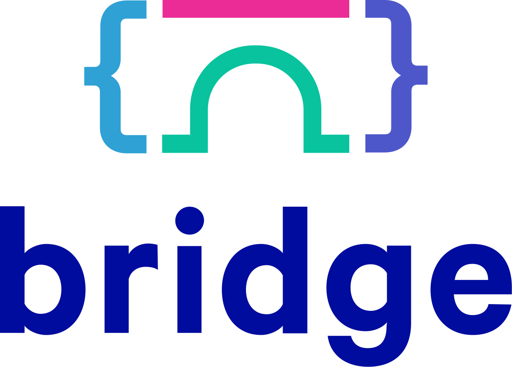

Bridge and Evolution
I hate the phrase “thought leader”. It’s the epitome of self-congratulatory business-speak, meant to sound vaguely inspirational without providing any affordance for disagreement. On those rare occasions when someone accuses me of being one, I tell them (quite truthfully) that I’m more of a thought scavenger. But a discussion last night at an inspiring meetup hosted by DITTo and Rangle for the Bridge program made me realize that “scavenger” isn’t the most accurate analogy.
When I was young, and most of what I knew about genetics came from reading X-Men comics, I thought that mutation was the driving force of evolution. I later learned that recombination is actually much more important. Viable new genes do occasionally emerge, but adaptation is usually a matter of remixing what’s already there.
The same is true of ideas and organizations. Nothing in Software Carpentry was genuinely novel; what was new was the particular combination of some widely-used software tools, evidence-based pedagogy, and community organization. Similarly, while Bridge is remixing ideas that the founders of the Mechanics’ Institues would have instantly recognized, it is still new, vital, and inspirational.
Bridge is now ready to start running classes with other Toronto-area tech companies. Their core team and volunteers are doing what most tech companies only talk about, and evolving as fast as they can; if you want to work with them to make the world a better place, please give them a shout.
